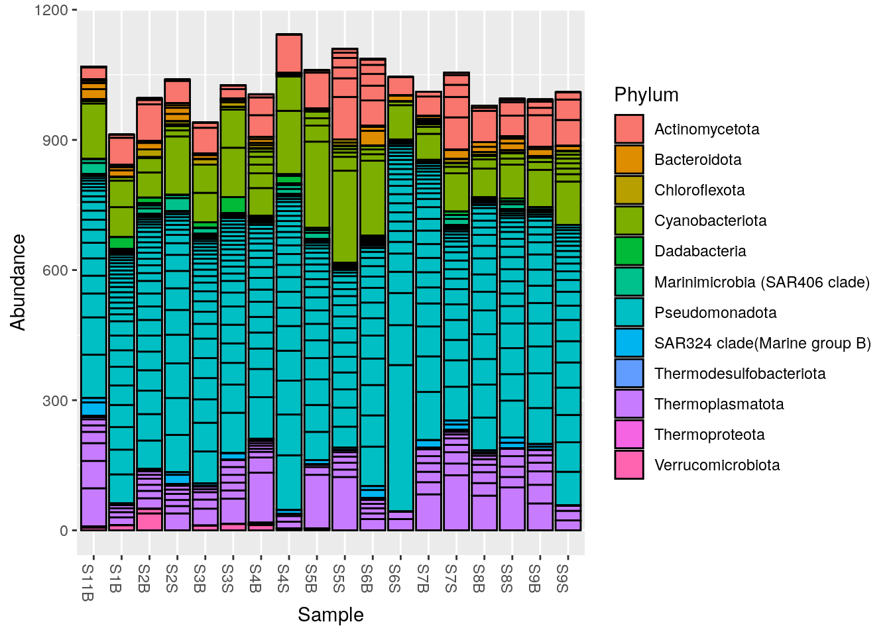

library(phyloseq)Preprocessing : phyloseq
1 Prepare workspace
Load phyloseq
We import the ASV table, the taxonomic assignment results and the sequences from the text files we exported in the dada2 practical.
Define where the previous practical outputs are located:
input_dir <- here::here("outputs", "dada2", "asv_table")Import the ASV table:
asv_table <- read.table(file = file.path(input_dir, "asv_table.tsv"),
header = TRUE,
sep = "\t",
row.names = 1)the results of the taxonomic assignment:
taxonomy <- read.table(file = file.path(input_dir, "taxonomy.tsv"),
header = TRUE,
sep = "\t",
row.names = 1)and the ASV sequences:
asv_seq <- Biostrings::readDNAStringSet(
filepath = file.path(input_dir, "asv.fasta"),
format = "fasta"
)We will also need some information about the samples, the file is located is another folder.
context <- read.table(here::here("data",
"context",
"mapfileFA.txt"),
header = TRUE,
row.names = 1)2 Get a phyloseq object
2.1 Check sample file
Make sure sample names in the ASV table…
colnames(asv_table) |> sort() [1] "S11B" "S1B" "S2B" "S2S" "S3B" "S3S" "S4B" "S4S" "S5B" "S5S"
[11] "S6B" "S6S" "S7B" "S7S" "S8B" "S8S" "S9B" "S9S" match sample table ids.
row.names(context) |> sort() [1] "S11B" "S1B" "S2B" "S2S" "S3B" "S3S" "S4B" "S4S" "S5B" "S5S"
[11] "S6B" "S6S" "S7B" "S7S" "S8B" "S8S" "S9B" "S9S" You can do it in a more formal way using the function setdiff(). This function returns the elements of x not present in y.
setdiff(x = colnames(asv_table),
y = row.names(context))character(0)Perfect! The ASV table sample names match with the contextual data table.
2.2 Assemble ASV table, taxonomy and contextual data
Use the phyloseq::phyloseq() function to create a phyloseq object. A phyloseq object is usualy composed by an ASV table, a taxonomy table and a table describing the samples. You can also add ASV sequences and a phylogenetic tree
physeq <- phyloseq::phyloseq(
phyloseq::otu_table(asv_table, taxa_are_rows = TRUE),
phyloseq::tax_table(as.matrix(taxonomy)),
phyloseq::sample_data(context),
phyloseq::refseq(asv_seq)
)3 Add a phylogenetic tree
3.1 Why?
Knowing the ASVs phylogenetic relatedness will help you to have a better understanding of the communities your studying.
To quote the evolutionary biologist Theodosius Dobzhansky:
Nothing in Biology Makes Sense Except in the Light of Evolution.
A phylogenetic tree reconstructed from the ASV sequences will be used to measure their relatedness.
3.2 Alignment using DECIPHER
Before reconstructing a phylogenetic tree we need to align the ASVs sequences.
aln <- refseq(physeq) |>
DECIPHER::AlignSeqs(anchor = NA)Once it is done, you can visualise the alignment using the function DECIPHER::BrowseSeqs()
DECIPHER::BrowseSeqs(aln, highlight = 0)3.3 Infering the phylogenetic tree
We will infer a phylogenetic from our alignement using the library phangorn.
First, let’s convert our DNAStringSet alignment to the phangorn phyDat format.
phang_align <- as.matrix(aln) |> phangorn::phyDat(type = "DNA")Then, we compute pairwise distances of our aligned sequences using equal base frequencies (JC69 model used by default).
dm <- phangorn::dist.ml(phang_align, model = "JC69")Finally, we reconstruct a neighbour joining tree.
treeNJ <- phangorn::NJ(dm)Other approaches to reconstruct a phylogenetic tree exist. If you want to try them with phangorn, have a look here
We need the tree to be rooted for future analysis. We can do that using the function phangorn::midpoint()
treeNJ <- phangorn::midpoint(tree = treeNJ)Once we have a rooted tree, we can add it to the phyloseq object.
physeq <- phyloseq::merge_phyloseq(physeq,treeNJ)3.4 If I do not have a tree
For some reasons, it is sometimes not relevant or not possible to infer a tree from our data.
For example, the metabarcode you are using is not carrying enough phylogenetic information to reconstruct a tree.
Or you have so many ASVs that infering a tree would require more computational ressource that what you can afford.
In that case, it is fine. You will still be able to perform most of the analyses introduced in the alpha and beta diversity practicals.
4 Extract information from a phyloseq object
Here a list of phyloseq functions to extract diverse information from your phyloseq object.
- Get the total number of ASVs
phyloseq::ntaxa(physeq)[1] 224- Get the total number of samples
phyloseq::nsamples(physeq)[1] 18- Get sample names
phyloseq::sample_names(physeq) [1] "S11B" "S1B" "S2B" "S2S" "S3B" "S3S" "S4B" "S4S" "S5B" "S5S"
[11] "S6B" "S6S" "S7B" "S7S" "S8B" "S8S" "S9B" "S9S" - Get ASV identification
phyloseq::taxa_names(physeq) |> head()[1] "ASV_001" "ASV_002" "ASV_003" "ASV_004" "ASV_005" "ASV_006"- Get the names of variables in sam_data
phyloseq::sample_variables(physeq) [1] "Geo" "Description" "groupe" "Pres" "PicoEuk"
[6] "Synec" "Prochloro" "NanoEuk" "Crypto" "SiOH4"
[11] "NO2" "NO3" "NH4" "PO4" "NT"
[16] "PT" "Chla" "T" "S" "Sigma_t" - Display all variables with values
phyloseq::get_variable(physeq) Geo Description groupe Pres PicoEuk Synec Prochloro NanoEuk Crypto SiOH4
S11B South South5B SGF 35 5370 46830 580 6010 1690 3.324
S1B North North1B NBF 52 660 32195 10675 955 115 1.813
S2B North North2B NBF 59 890 25480 16595 670 395 2.592
S2S North North2S NBS 0 890 25480 16595 670 395 3.381
S3B North North3B NBF 74 835 13340 25115 1115 165 1.438
S3S North North3S NBS 0 715 26725 16860 890 200 1.656
S4B North North4B NBF 78 2220 3130 29835 2120 235 2.457
S4S North North4S NBS 78 2220 3130 29835 2120 235 2.457
S5B North North5B NBF 42 1620 55780 23795 2555 1355 2.028
S5S North North5S NBS 0 1620 56555 22835 2560 945 2.669
S6B South South1B SGF 13 2520 39050 705 3630 1295 2.206
S6S South South1S SGS 0 2435 35890 915 3735 1300 3.004
S7B South South2B SGF 26 0 0 0 4005 1600 3.016
S7S South South2S SGS 0 4535 26545 1340 6585 1355 1.198
S8B South South3B SGF 33 0 0 0 5910 1590 3.868
S8S South South3S SGS 0 4260 36745 985 5470 2265 3.639
S9B South South4B SGF 25 4000 31730 485 4395 1180 3.910
S9S South South4S SGS 0 5465 32860 820 5045 1545 3.607
NO2 NO3 NH4 PO4 NT PT Chla T S Sigma_t
S11B 0.083 0.756 0.467 0.115 9.539 4.138 0.0182 23.0308 38.9967 26.9631
S1B 0.256 0.889 0.324 0.132 9.946 3.565 0.0000 22.7338 37.6204 26.0046
S2B 0.105 1.125 0.328 0.067 9.378 3.391 0.0000 22.6824 37.6627 26.0521
S2S 0.231 0.706 0.450 0.109 8.817 3.345 0.0000 22.6854 37.6176 26.0137
S3B 0.057 1.159 0.369 0.174 8.989 2.568 0.0000 21.5296 37.5549 26.2987
S3S 0.098 0.794 0.367 0.095 7.847 2.520 0.0000 22.5610 37.5960 26.0332
S4B 0.099 1.087 0.349 0.137 8.689 3.129 0.0000 18.8515 37.4542 26.9415
S4S 0.099 1.087 0.349 0.137 8.689 3.129 0.0000 18.8515 37.4542 26.9415
S5B 0.103 1.135 0.216 0.128 8.623 3.137 0.0102 24.1905 38.3192 26.1037
S5S 0.136 0.785 0.267 0.114 9.146 3.062 0.0000 24.1789 38.3213 26.1065
S6B 0.249 0.768 0.629 0.236 9.013 3.455 0.0000 22.0197 39.0877 27.3241
S6S 0.251 0.927 0.653 0.266 8.776 3.230 0.0134 22.0515 39.0884 27.3151
S7B 0.157 0.895 0.491 0.176 8.968 4.116 0.0000 23.6669 38.9699 26.7536
S7S 0.165 1.099 0.432 0.180 8.256 3.182 0.0000 23.6814 38.9708 26.7488
S8B 0.253 0.567 0.533 0.169 8.395 3.126 0.0000 23.1236 39.0054 26.9423
S8S 0.255 0.658 0.665 0.247 8.991 3.843 0.0132 23.3147 38.9885 26.8713
S9B 0.107 0.672 0.490 0.134 8.954 4.042 0.0172 22.6306 38.9094 27.0131
S9S 0.139 0.644 0.373 0.167 9.817 3.689 0.0062 22.9545 38.7777 26.8172- Sum the reads by sample
phyloseq::sample_sums(physeq)S11B S1B S2B S2S S3B S3S S4B S4S S5B S5S S6B S6S S7B S7S S8B S8S
1069 912 996 1039 940 1026 1005 1143 1061 1110 1087 1045 1011 1055 979 995
S9B S9S
993 1010 - Sum the reads by species/taxa/OTUs (for all samples)
phyloseq::taxa_sums(physeq) |> head()ASV_001 ASV_002 ASV_003 ASV_004 ASV_005 ASV_006
1776 992 967 871 854 663 - Sort species/taxa/OTUs by number of reads
phyloseq::taxa_sums(physeq) |>
sort(decreasing = TRUE) |>
head()ASV_001 ASV_002 ASV_003 ASV_004 ASV_005 ASV_006
1776 992 967 871 854 663 - Get taxonomic ranks (useful for other commands)
phyloseq::rank_names(physeq)[1] "Kingdom" "Phylum" "Class" "Order" "Family" "Genus" "Species"- Show abundance of a given ASV
phyloseq::get_sample(physeq, i = "ASV_001")S11B S1B S2B S2S S3B S3S S4B S4S S5B S5S S6B S6S S7B S7S S8B S8S
128 69 58 135 65 88 12 80 199 212 173 79 60 88 66 78
S9B S9S
86 100 - Show ASVs and abundance for a given sample
phyloseq::get_taxa(physeq, i = "S2B") |> head()ASV_001 ASV_002 ASV_003 ASV_004 ASV_005 ASV_006
58 0 17 43 37 0 - Get phyla detected in your samples
phyloseq::get_taxa_unique(physeq, taxonomic.rank = "Phylum") [1] "Cyanobacteriota" "Pseudomonadota"
[3] "Thermoplasmatota" "Actinomycetota"
[5] "Bacteroidota" "SAR324 clade(Marine group B)"
[7] "Dadabacteria" "Verrucomicrobiota"
[9] "Chloroflexota" "Marinimicrobia (SAR406 clade)"
[11] "Thermoproteota" "Thermodesulfobacteriota" If you do not remember the name of the taxonomic ranks in your phyloseq object use phyloseq::rank_names(physeq)
- Number of ASVs per phylum
table(phyloseq::tax_table(physeq)[, "Phylum"])
Actinomycetota Bacteroidota
19 16
Chloroflexota Cyanobacteriota
3 16
Dadabacteria Marinimicrobia (SAR406 clade)
2 13
Pseudomonadota SAR324 clade(Marine group B)
119 3
Thermodesulfobacteriota Thermoplasmatota
1 25
Thermoproteota Verrucomicrobiota
1 6 You can also plot a barchart to visualise the results.
plot_bar(physeq, fill = "Phylum")
More about plots in the alpha and beta diversity practicals.
The sessionInfo() function in R provides a quick summary of your R environment, including the version of R, loaded packages, and their versions—useful for debugging, reproducibility, and sharing your setup with others.
sessionInfo()R version 4.3.1 (2023-06-16)
Platform: x86_64-pc-linux-gnu (64-bit)
Running under: Ubuntu 22.04.3 LTS
Matrix products: default
BLAS: /usr/lib/x86_64-linux-gnu/openblas-pthread/libblas.so.3
LAPACK: /usr/lib/x86_64-linux-gnu/openblas-pthread/libopenblasp-r0.3.20.so; LAPACK version 3.10.0
locale:
[1] LC_CTYPE=en_US.UTF-8 LC_NUMERIC=C
[3] LC_TIME=en_US.UTF-8 LC_COLLATE=en_US.UTF-8
[5] LC_MONETARY=en_US.UTF-8 LC_MESSAGES=en_US.UTF-8
[7] LC_PAPER=en_US.UTF-8 LC_NAME=C
[9] LC_ADDRESS=C LC_TELEPHONE=C
[11] LC_MEASUREMENT=en_US.UTF-8 LC_IDENTIFICATION=C
time zone: Etc/UTC
tzcode source: system (glibc)
attached base packages:
[1] stats graphics grDevices utils datasets methods base
other attached packages:
[1] phyloseq_1.44.0
loaded via a namespace (and not attached):
[1] ade4_1.7-22 tidyselect_1.2.0 farver_2.1.1
[4] dplyr_1.1.2 blob_1.2.4 Biostrings_2.68.1
[7] bitops_1.0-7 fastmap_1.1.1 RCurl_1.98-1.12
[10] digest_0.6.33 lifecycle_1.0.3 cluster_2.1.4
[13] survival_3.5-7 RSQLite_2.3.1 magrittr_2.0.3
[16] compiler_4.3.1 rlang_1.1.1 tools_4.3.1
[19] igraph_1.5.1 utf8_1.2.3 yaml_2.3.7
[22] data.table_1.14.8 knitr_1.43 phangorn_2.11.1
[25] labeling_0.4.2 htmlwidgets_1.6.2 bit_4.0.5
[28] here_1.0.1 plyr_1.8.8 withr_2.5.0
[31] BiocGenerics_0.46.0 grid_4.3.1 stats4_4.3.1
[34] fansi_1.0.4 multtest_2.56.0 biomformat_1.28.0
[37] colorspace_2.1-0 Rhdf5lib_1.22.0 ggplot2_3.4.3
[40] scales_1.2.1 iterators_1.0.14 MASS_7.3-60
[43] cli_3.6.1 rmarkdown_2.24 vegan_2.6-4
[46] crayon_1.5.2 generics_0.1.3 rstudioapi_0.15.0
[49] reshape2_1.4.4 DBI_1.1.3 ape_5.7-1
[52] cachem_1.0.8 rhdf5_2.44.0 stringr_1.5.0
[55] zlibbioc_1.46.0 splines_4.3.1 parallel_4.3.1
[58] XVector_0.40.0 vctrs_0.6.3 Matrix_1.6-1
[61] jsonlite_1.8.7 IRanges_2.34.1 S4Vectors_0.38.1
[64] bit64_4.0.5 foreach_1.5.2 glue_1.6.2
[67] codetools_0.2-19 stringi_1.7.12 gtable_0.3.4
[70] GenomeInfoDb_1.36.2 quadprog_1.5-8 munsell_0.5.0
[73] tibble_3.2.1 pillar_1.9.0 htmltools_0.5.6
[76] rhdf5filters_1.12.1 GenomeInfoDbData_1.2.10 R6_2.5.1
[79] rprojroot_2.0.3 evaluate_0.21 lattice_0.21-8
[82] Biobase_2.60.0 memoise_2.0.1 DECIPHER_2.28.0
[85] Rcpp_1.0.11 fastmatch_1.1-4 nlme_3.1-163
[88] permute_0.9-7 mgcv_1.9-0 xfun_0.40
[91] pkgconfig_2.0.3